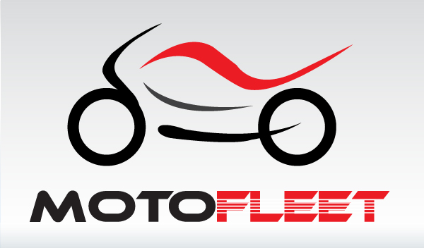

¿Porque elegir una Motocicleta?
Llegado este punto hay que dejar a un lado los sentimientos y enfriar bien la cabeza para que nuestra compra sea lo más exitosa posible.
No serías el primero que acaba vendiendo una moto por no soportar el acoso a que te someten en casa porque aquella compra tan ideal se ha convertido en una pesadilla que casi ni usas.
Así que el primer paso empieza por preguntarnos ¿Usaré la moto para ir al trabajo?
¿La usaré sólo para fines de semana?
¿Cuánto dinero me puedo permitir gastar? ¿De verdad voy a ir cómodo en moto?
|
 |

Con este modelo llegamos a la moto más cara del momento. Se vende por la increíble cantidad de 230.000€ ($300.000) y dispone de un motor de 250 caballos de fuerza.
A esto hay que sumar su última tecnología y su diseño realizado en fibra de carbono. Como detalles exclusivos, el asiento, realizado con cuero italiano de la firma Berlutti y los tubos de escape, que terminan con cerámica granallada.
De ella se han fabricado tan solo 13 unidades, una cifra que además de desafiar a la mala suerte demuestra que será difícil que veamos una de estas por la carretera.
|